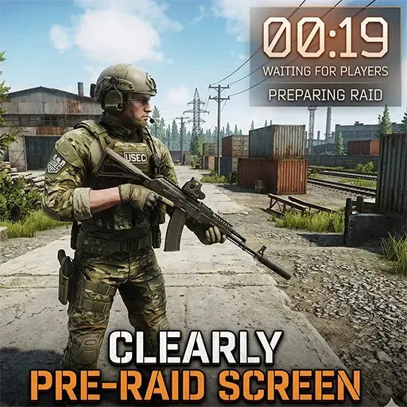

Mod
Clearly Pre-Raid Screen
- Downloads
- 5,791
- Favourites
- 52
- Mod lists
- 104
This simple mod allow you see where your character borned in map, when pre-raid loading and count. just this : )
Version
1.0.0
SPT ~4.0.13
Fika: compatible
5,791 downloads3.2 KB
release.
VirusTotal: report 1